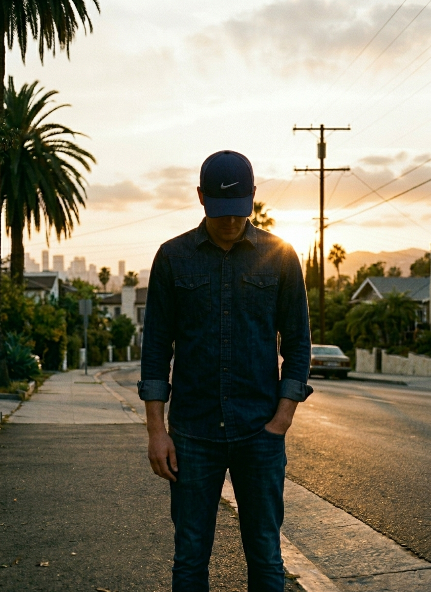

Sun Dog
Sun Dog explores the boundaries of landscape and abstraction through a deeply personal visual vocabulary. His paintings, often rendered in rich, saturated color fields, evoke a contemplative stillness that hovers between representation and pure sensation.
Working primarily with oil on canvas, his practice distills nature into its most essential forms — solitary trees, expansive skies, and luminous horizons emerge from layers of pigment with an almost meditative quality. The work invites a prolonged encounter, rewarding patience with subtle shifts in tone and light.
Selected Works

Sun Dog
Untitled (Horizon), 2024
Oil on canvas152 × 122 cm

Sun Dog
Dawn Study No. 7, 2023
Oil on canvas183 × 152 cm

Sun Dog
Evening Field, 2023
Oil on canvas122 × 91 cm

Sun Dog
Tree (After Rain), 2022
Oil on canvas213 × 152 cm

Sun Dog
Blue Interior, 2022
Oil on canvas91 × 76 cm

Sun Dog
Solstice, 2021
Oil on linen168 × 137 cm


Quiet Paintings: a painter tuned to silence
The New York Times · Apr 2025
In his latest New York show, Sun Dog slows the eye down until color seems to breathe. Layers of oil read as weather as much as pigment.
Horizon lines that refuse to resolve
The New York Times · Jan 2025
The critic argues that his landscapes withhold closure on purpose: skies melt into fields until figure and ground trade places.
In the studio with Sun Dog
The New York Times · Sep 2024
Canvases lean against the wall like doors ajar; he scrapes, waits, and returns days later. Patience, he says, is the only shortcut.
Color fields and the weight of twilight
The New York Times · Mar 2024
Dusk is a recurring character in this work—neither day nor night, it lets violet and umber do the emotional lifting without a single figure.
Solo Exhibitions
- 2026 Recent Studies, Galerie, Paris
- 2025 Your friends, Galerie, London
- 2025 Quiet Paintings, Galerie, New York
- 2024 Evening Hours, Kunsthalle, Berlin
- 2023 Horizons, Musée d'Art Moderne, Brussels
- 2022 Trees and Fields, Galerie, Shanghai
Group Exhibitions
- 2026 Chromatic Variations, Centre Pompidou, Paris
- 2025 The Landscape Reimagined, Tate Modern, London
- 2024 Color Fields Today, MoMA PS1, New York
- 2023 Painting Now, Palazzo Grassi, Venice
- 2022 New Abstractions, MOCA, Los Angeles
- 2021 Nature Transformed, Fondation Louis Vuitton, Paris